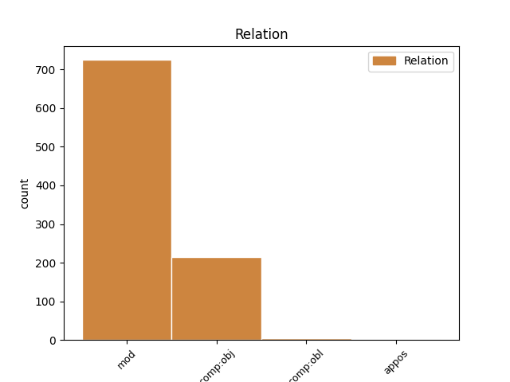
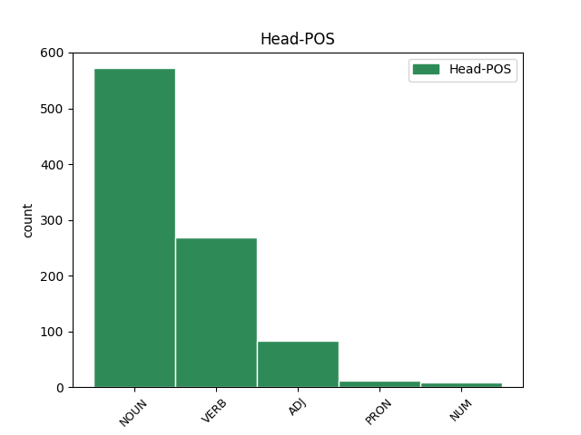
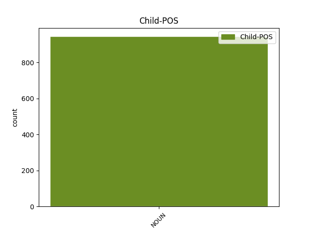

Distribution of features within this leaf



Agreement Rules sorted by frequency.
- When the dependent token is the modifer(mod) of the head token, and the head token is NOUN and the dependent token is NOUN.
1 misereamini _ _ _ _ 0 _ _ _
2 censeo _ _ _ _ 0 _ _ _
3 deliquere _ _ _ _ 0 _ _ _
4 homines homo NOUN n-p---mn- Case=Nom|Gender=Masc|Number=Plur 0 _ _ _
5 adulescentuli adulescentulus NOUN n-p---mn- Case=Nom|Gender=Masc|Number=Plur 4 mod _ LId=adulescentulus1
6 per _ _ _ _ 0 _ _ _
7 ambitionem _ _ _ _ 0 _ _ _
8 atque _ _ _ _ 0 _ _ _
9 etiam _ _ _ _ 0 _ _ _
10 armatos _ _ _ _ 0 _ _ _
11 dimittatis _ _ _ _ 0 _ _ _
12 : _ _ _ _ 0 _ _ _
1 sperabat _ _ _ _ 0 _ _ _
2 propediem _ _ _ _ 0 _ _ _
3 magnas _ _ _ _ 0 _ _ _
4 copias copia NOUN n-p---fa- Case=Acc|Gender=Fem|Number=Plur 6 comp:obj _ LId=copia1
5 sese _ _ _ _ 0 _ _ _
6 habiturum habeo VERB v-sfpama- Case=Acc|Gender=Masc|Number=Sing|Tense=Fut|VerbForm=Part|Voice=Act 0 _ _ _
7 , _ _ _ _ 0 _ _ _
8 si _ _ _ _ 0 _ _ _
9 Romae _ _ _ _ 0 _ _ _
10 socii _ _ _ _ 0 _ _ _
11 incepta _ _ _ _ 0 _ _ _
12 patravissent _ _ _ _ 0 _ _ _
13 . _ _ _ _ 0 _ _ _
1 simul _ _ _ _ 0 _ _ _
2 caede caedes NOUN n-s---fb- Case=Abl|Gender=Fem|Number=Sing 5 mod _ LId=caedes1
3 et _ _ _ _ 0 _ _ _
4 incendio _ _ _ _ 0 _ _ _
5 perculsis percello VERB v-prppnb- Aspect=Perf|Case=Abl|Gender=Neut|Number=Plur|Tense=Past|VerbForm=Part|Voice=Pass 0 _ _ _
6 omnibus _ _ _ _ 0 _ _ _
7 ad _ _ _ _ 0 _ _ _
8 Catilinam _ _ _ _ 0 _ _ _
9 erumperent _ _ _ _ 0 _ _ _
10 . _ _ _ _ 0 _ _ _
1 Neque _ _ _ _ 0 _ _ _
2 enim _ _ _ _ 0 _ _ _
3 tibi _ _ _ _ 0 _ _ _
4 haec _ _ _ _ 0 _ _ _
5 res _ _ _ _ 0 _ _ _
6 adfert _ _ _ _ 0 _ _ _
7 dolorem dolor NOUN n-s---ma- Case=Acc|Gender=Masc|Number=Sing 0 _ _ _
8 , _ _ _ _ 0 _ _ _
9 sed _ _ _ _ 0 _ _ _
10 quandam _ _ _ _ 0 _ _ _
11 incredibilem _ _ _ _ 0 _ _ _
12 voluptatem voluptas NOUN n-s---fa- Case=Acc|Gender=Fem|Number=Sing 7 comp:obj _ LId=voluptas1|SpaceAfter=No
13 . _ _ _ _ 0 _ _ _
1 Dum _ _ _ _ 0 _ _ _
2 haec _ _ _ _ 0 _ _ _
3 Romae _ _ _ _ 0 _ _ _
4 geruntur _ _ _ _ 0 _ _ _
5 , _ _ _ _ 0 _ _ _
6 C _ _ _ _ 0 _ _ _
7 . _ _ _ _ 0 _ _ _
8 Manlius _ _ _ _ 0 _ _ _
9 ex _ _ _ _ 0 _ _ _
10 suo _ _ _ _ 0 _ _ _
11 numero _ _ _ _ 0 _ _ _
12 legatos _ _ _ _ 0 _ _ _
13 ad _ _ _ _ 0 _ _ _
14 Marcium Marcius ADJ a-s---ma- Case=Acc|Gender=Masc|Number=Sing 0 _ _ _
15 Regem rex NOUN n-s---ma- Case=Acc|Gender=Masc|Number=Sing 14 mod _ LId=rex1
16 mittit _ _ _ _ 0 _ _ _
17 cum _ _ _ _ 0 _ _ _
18 mandatis _ _ _ _ 0 _ _ _
19 huiusce _ _ _ _ 0 _ _ _
20 modi _ _ _ _ 0 _ _ _
21 : _ _ _ _ 0 _ _ _
1 Lupercalibus _ _ _ _ 0 _ _ _
2 uetuit _ _ _ _ 0 _ _ _
3 currere _ _ _ _ 0 _ _ _
4 inberbes _ _ _ _ 0 _ _ _
5 , _ _ _ _ 0 _ _ _
6 item _ _ _ _ 0 _ _ _
7 Saecularibus _ _ _ _ 0 _ _ _
8 ludis _ _ _ _ 0 _ _ _
9 iuuenes _ _ _ _ 0 _ _ _
10 utriusque _ _ _ _ 0 _ _ _
11 sexus _ _ _ _ 0 _ _ _
12 prohibuit _ _ _ _ 0 _ _ _
13 ullum _ _ _ _ 0 _ _ _
14 nocturnum _ _ _ _ 0 _ _ _
15 spectaculum _ _ _ _ 0 _ _ _
16 frequentare _ _ _ _ 0 _ _ _
17 nisi _ _ _ _ 0 _ _ _
18 cum _ _ _ _ 0 _ _ _
19 aliquo aliquis PRON p-s---mb- Case=Abl|Gender=Masc|Number=Sing 0 _ _ _
20 maiore _ _ _ _ 0 _ _ _
21 natu natus NOUN n-s---mb- Case=Abl|Gender=Masc|Number=Sing 19 mod _ LId=natus2
22 propinquorum _ _ _ _ 0 _ _ _
23 . _ _ _ _ 0 _ _ _
1 at _ _ _ _ 0 _ _ _
2 hi hic PRON p-p---mn- Case=Nom|Gender=Masc|Number=Plur 0 _ _ _
3 contra _ _ _ _ 0 _ _ _
4 , _ _ _ _ 0 _ _ _
5 ignavissumi _ _ _ _ 0 _ _ _
6 homines homo NOUN n-p---mn- Case=Nom|Gender=Masc|Number=Plur 2 appos _ LId=homo1|SpaceAfter=No
7 , _ _ _ _ 0 _ _ _
8 per _ _ _ _ 0 _ _ _
9 summum _ _ _ _ 0 _ _ _
10 scelus _ _ _ _ 0 _ _ _
11 omnia _ _ _ _ 0 _ _ _
12 ea _ _ _ _ 0 _ _ _
13 sociis _ _ _ _ 0 _ _ _
14 adimere _ _ _ _ 0 _ _ _
15 , _ _ _ _ 0 _ _ _
16 quae _ _ _ _ 0 _ _ _
17 fortissumi _ _ _ _ 0 _ _ _
18 viri _ _ _ _ 0 _ _ _
19 victores _ _ _ _ 0 _ _ _
20 reliquerant _ _ _ _ 0 _ _ _
21 : _ _ _ _ 0 _ _ _
Disagree Examples:
1 Praedator _ _ _ _ 0 _ _ _
2 intervenit _ _ _ _ 0 _ _ _
3 partem pars NOUN n-s---fa- Case=Acc|Gender=Fem|Number=Sing 4 comp:obj _ _
4 postulans postulo VERB v-spp-mn- Case=Nom|Gender=Masc|Number=Sing|Tense=Pres|VerbForm=Part 0 _ _ _
5 . _ _ _ _ 0 _ _ _
1 Aetatis aetas NOUN n-s---fg- Case=Gen|Gender=Fem|Number=Sing 3 mod _ _
2 mediae _ _ _ _ 0 _ _ _
3 quendam quidam PRON p-s---ma- Case=Acc|Gender=Masc|Number=Sing 0 _ _ _
4 mulier _ _ _ _ 0 _ _ _
5 non _ _ _ _ 0 _ _ _
6 rudis _ _ _ _ 0 _ _ _
7 Tenebat _ _ _ _ 0 _ _ _
8 annos _ _ _ _ 0 _ _ _
9 celans _ _ _ _ 0 _ _ _
10 elegantia _ _ _ _ 0 _ _ _
11 , _ _ _ _ 0 _ _ _
12 Animos _ _ _ _ 0 _ _ _
13 que _ _ _ _ 0 _ _ _
14 eiusdem _ _ _ _ 0 _ _ _
15 pulchra _ _ _ _ 0 _ _ _
16 iuvenis _ _ _ _ 0 _ _ _
17 ceperat _ _ _ _ 0 _ _ _
18 . _ _ _ _ 0 _ _ _
1 Aetatis _ _ _ _ 0 _ _ _
2 mediae _ _ _ _ 0 _ _ _
3 quendam _ _ _ _ 0 _ _ _
4 mulier _ _ _ _ 0 _ _ _
5 non _ _ _ _ 0 _ _ _
6 rudis _ _ _ _ 0 _ _ _
7 Tenebat _ _ _ _ 0 _ _ _
8 annos annus NOUN n-p---ma- Case=Acc|Gender=Masc|Number=Plur 9 comp:obj _ _
9 celans celo VERB v-spp-fn- Case=Nom|Gender=Fem|Number=Sing|Tense=Pres|VerbForm=Part 0 _ _ _
10 elegantia _ _ _ _ 0 _ _ _
11 , _ _ _ _ 0 _ _ _
12 Animos _ _ _ _ 0 _ _ _
13 que _ _ _ _ 0 _ _ _
14 eiusdem _ _ _ _ 0 _ _ _
15 pulchra _ _ _ _ 0 _ _ _
16 iuvenis _ _ _ _ 0 _ _ _
17 ceperat _ _ _ _ 0 _ _ _
18 . _ _ _ _ 0 _ _ _
1 Aetatis _ _ _ _ 0 _ _ _
2 mediae _ _ _ _ 0 _ _ _
3 quendam _ _ _ _ 0 _ _ _
4 mulier _ _ _ _ 0 _ _ _
5 non _ _ _ _ 0 _ _ _
6 rudis _ _ _ _ 0 _ _ _
7 Tenebat _ _ _ _ 0 _ _ _
8 annos _ _ _ _ 0 _ _ _
9 celans celo VERB v-spp-fn- Case=Nom|Gender=Fem|Number=Sing|Tense=Pres|VerbForm=Part 0 _ _ _
10 elegantia elegantia NOUN n-s---fb- Case=Abl|Gender=Fem|Number=Sing 9 mod _ SpaceAfter=No
11 , _ _ _ _ 0 _ _ _
12 Animos _ _ _ _ 0 _ _ _
13 que _ _ _ _ 0 _ _ _
14 eiusdem _ _ _ _ 0 _ _ _
15 pulchra _ _ _ _ 0 _ _ _
16 iuvenis _ _ _ _ 0 _ _ _
17 ceperat _ _ _ _ 0 _ _ _
18 . _ _ _ _ 0 _ _ _
1 Laceratus lacero VERB v-srppmn- Aspect=Perf|Case=Nom|Gender=Masc|Number=Sing|Tense=Past|VerbForm=Part|Voice=Pass 0 _ _ _
2 quidam _ _ _ _ 0 _ _ _
3 morsu morsus NOUN n-s---mb- Case=Abl|Gender=Masc|Number=Sing 1 comp:obj _ LId=morsus2
4 vehementis _ _ _ _ 0 _ _ _
5 canis _ _ _ _ 0 _ _ _
6 Tinctum _ _ _ _ 0 _ _ _
7 cruore _ _ _ _ 0 _ _ _
8 panem _ _ _ _ 0 _ _ _
9 misit _ _ _ _ 0 _ _ _
10 malefico _ _ _ _ 0 _ _ _
11 , _ _ _ _ 0 _ _ _
12 Audierat _ _ _ _ 0 _ _ _
13 esse _ _ _ _ 0 _ _ _
14 quod _ _ _ _ 0 _ _ _
15 remedium _ _ _ _ 0 _ _ _
16 vulneris _ _ _ _ 0 _ _ _
17 . _ _ _ _ 0 _ _ _